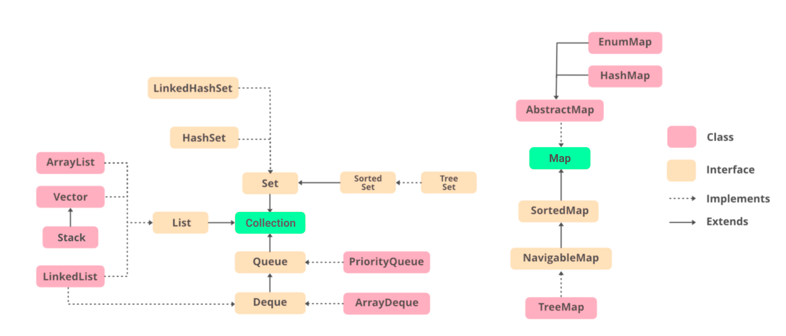

목차

Stack Java에서 Stack을 사용할 때는 Stack클래스를 사용한다.
1 Stack<Integer> stack = new Stack<Integer>();
Push 작업은 다음과 같이 한다.
1 2 3 stack.push(1 ); stack.push(2 ); stack.push(3 );
top에 있는 요소는 peek()로 접근할 수 있다.
Pop 작업은 다음과 같이 한다.
1 Integer value = stack.pop()
Queue Queue는 Queue인터페이스와 LinkedList클래스로 구현한다.
1 2 3 4 5 6 7 8 public interface Queue <E > extends Collection <E > boolean add (E e) boolean offer (E e) E remove () ; E poll () ; E element () ; E peek () ; }
Queue는 다음과 같이 생성한다.
1 Queue<Integer> queue = new LinkedList<Integer>();
Enqueue 작업은 add()나 offer()를 사용한다.
1 2 3 4 5 Queue<Integer> queue = new LinkedList<Integer>(); queue.add(1 ); queue.offer(2 ); System.out.println(queue.toString());
peak()을 사용하면 가장 처음 들어온 요소에 접근할 수 있다.
1 2 3 System.out.println(queue.toString()); Integer result = queue.peek();
Dequeue 작업은 remove()나 poll()을 사용한다.
1 2 3 4 5 6 System.out.println(queue.toString()); System.out.println(queue.remove()); System.out.println(queue.poll()); System.out.println(queue.toString());
Deque Java에서 Deque는 Deque인터페이스와 ArrayDeque로 구현한다.
Deque.java 1 2 3 4 5 6 7 8 9 10 public interface Deque <E > extends Queue <E > void addFirst (E e) void addLast (E e) E removeFirst () ; E removeLast () ; E peekFirst () ; E peekLast () ; boolean contains (Object o) }
데이터 삽입은 다음과 같이 한다.
1 2 3 4 5 6 7 8 9 Deque<Integer> deque = new ArrayDeque<>(); deque.addLast(1 ); deque.addLast(2 ); System.out.println(deque.toString()); deque.addFirst(5 ); deque.addFirst(6 ); System.out.println(deque.toString());
데이터 접근은 다음과 같이 한다.
1 2 3 4 System.out.println(deque.toString()); System.out.println(deque.peekFirst()); System.out.println(deque.peekLast());
데이터 삭제는 다음과 같이 한다.
1 2 3 4 5 6 System.out.println(deque.toString()); System.out.println(deque.removeFirst()); System.out.println(deque.removeLast()); System.out.println(deque.toString());
PriorityQueue (1) 사용법 PriorityQueue는 데이터를 Enqueue한 순서에 상관없이 우선순위가 높은 데이터가 먼저 Dequeue되는 자료구조다.
PriorityQueue는 PriorityQueue클래스를 사용하여 생성한다.
1 PriorityQueue<Integer> priorityQueue = new PriorityQueue<Integer>();
add() 또는 offer()를 사용하여 Enqueue한다.
1 2 3 4 5 6 priorityQueue.add(3 ); priorityQueue.add(1 ); priorityQueue.add(7 ); priorityQueue.offer(4 ); priorityQueue.offer(9 ); priorityQueue.offer(5 );
정렬 기준을 별도로 설정하지 않으면 가장 낮은 값이 높은 우선순위를 갖는다. 따라서 오름차순으로 졍렬된 것과 동일하게 된다.
1 System.out.println(priorityQueue.toString());
peek()를 사용하여 우선순위가 가장 높은 데이터에 접근한다.
1 System.out.println(priorityQueue.peek());
remove(), poll()을 사용하여 우선순위가 가장 높은 데이터를 Dequeue한다.
1 2 3 4 5 System.out.println(priorityQueue.toString()); System.out.println(priorityQueue.remove()); System.out.println(priorityQueue.poll()); System.out.println(priorityQueue.toString());
(2) 내림차순 정렬 높은 값에 높은 우선순위를 부여할 수도 있다. 객체를 생성할 때 Collections.reverseOrder()를 인자로 전달한다.
1 2 3 4 5 6 7 8 9 10 11 12 13 PriorityQueue<Integer> priorityQueue = new PriorityQueue<Integer>(Collections.reverseOrder()); priorityQueue.add(3 ); priorityQueue.add(1 ); priorityQueue.add(7 ); priorityQueue.add(4 ); priorityQueue.add(9 ); priorityQueue.add(5 ); System.out.println(priorityQueue.toString()); System.out.println(priorityQueue.remove()); System.out.println(priorityQueue.poll()); System.out.println(priorityQueue.toString());
(3) 우선순위 기준 직접 지정하기 ComparatorComparable
Comparator 예제는 다음과 같다.
Person.java 1 2 3 4 5 6 7 8 9 10 11 12 13 14 15 16 17 18 19 20 21 22 23 24 25 26 27 28 29 30 class Person private String name; private int age; public Person (String name, int age) this .name = name; this .age = age; } public String getName () return name; } public void setName (String name) this .name = name; } public int getAge () return age; } public void setAge (int age) this .age = age; } @Override public String toString () return "[name='" + name + "', age=" + age + ']' ; } }
Main.java 1 2 3 4 5 6 7 8 9 10 11 12 13 14 15 16 17 18 19 20 PriorityQueue<Person> priorityQueue = new PriorityQueue<Person>(new Comparator<Person>() { @Override public int compare (Person p1, Person p2) return p1.getAge() - p2.getAge(); } }); priorityQueue.add(new Person("Monica" , 23 )); priorityQueue.add(new Person("Phoebe" , 25 )); priorityQueue.add(new Person("Rachel" , 24 )); priorityQueue.add(new Person("Ross" , 27 )); priorityQueue.add(new Person("Chandler" , 26 )); priorityQueue.add(new Person("Ross" , 22 )); System.out.println(priorityQueue.remove().toString()); System.out.println(priorityQueue.remove().toString()); System.out.println(priorityQueue.remove().toString()); System.out.println(priorityQueue.remove().toString()); System.out.println(priorityQueue.remove().toString()); System.out.println(priorityQueue.remove().toString());
Comparable 예제는 다음과 같다. 어린 나이에 높은 우선순위를 부여하고 있다.
Person.java 1 2 3 4 5 6 7 8 9 10 11 12 13 14 15 16 17 18 19 20 21 22 23 24 25 26 27 28 29 30 31 32 33 34 35 36 class Person implements Comparable <Person > private String name; private int age; public Person (String name, int age) this .name = name; this .age = age; } public String getName () return name; } public void setName (String name) this .name = name; } public int getAge () return age; } public void setAge (int age) this .age = age; } @Override public String toString () return "[name='" + name + "', age=" + age + ']' ; } @Override public int compareTo (Person p) return this .getAge() - p.getAge(); } }
Main.java 1 2 3 4 5 6 7 8 9 10 11 12 13 14 15 PriorityQueue<Person> priorityQueue = new PriorityQueue<Person>(); priorityQueue.add(new Person("Monica" , 23 )); priorityQueue.add(new Person("Phoebe" , 25 )); priorityQueue.add(new Person("Rachel" , 24 )); priorityQueue.add(new Person("Ross" , 27 )); priorityQueue.add(new Person("Chandler" , 26 )); priorityQueue.add(new Person("Ross" , 22 )); System.out.println(priorityQueue.remove().toString()); System.out.println(priorityQueue.remove().toString()); System.out.println(priorityQueue.remove().toString()); System.out.println(priorityQueue.remove().toString()); System.out.println(priorityQueue.remove().toString()); System.out.println(priorityQueue.remove().toString());